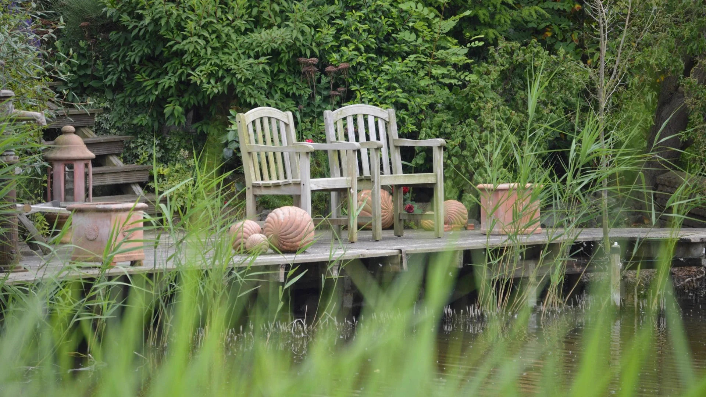
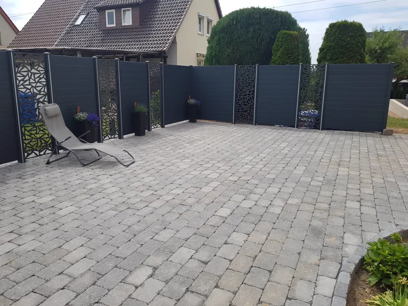
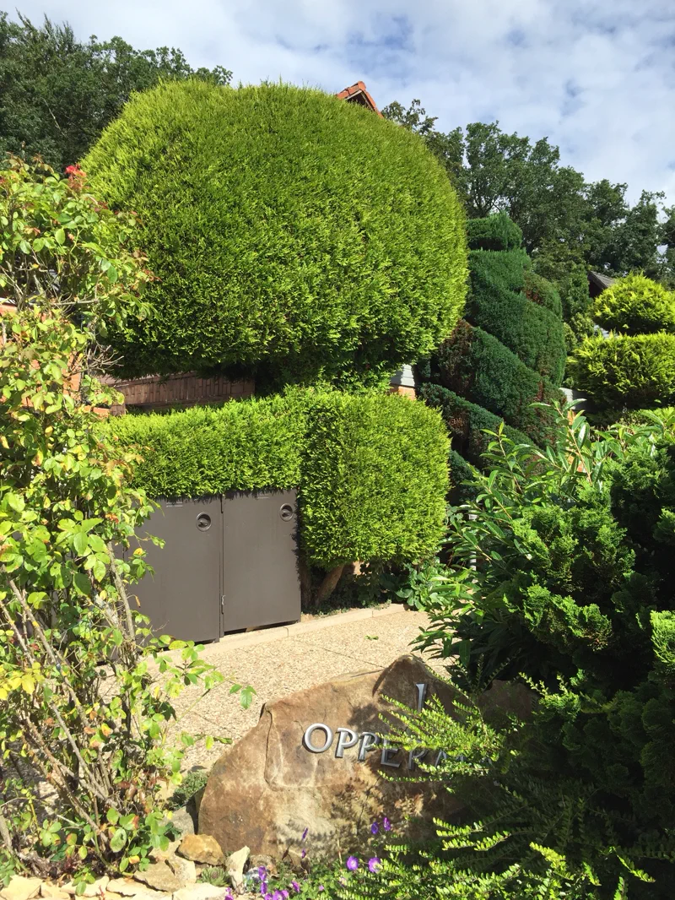
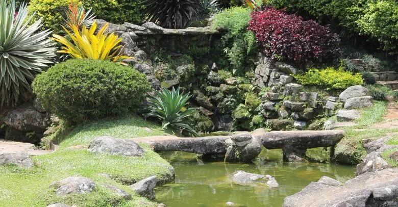
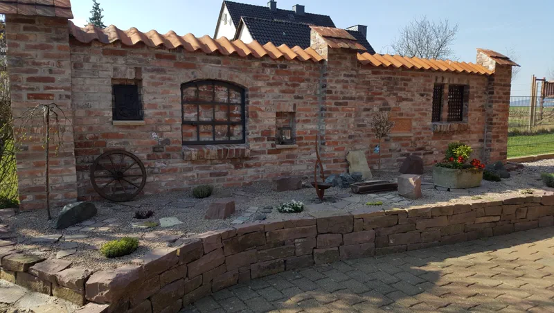
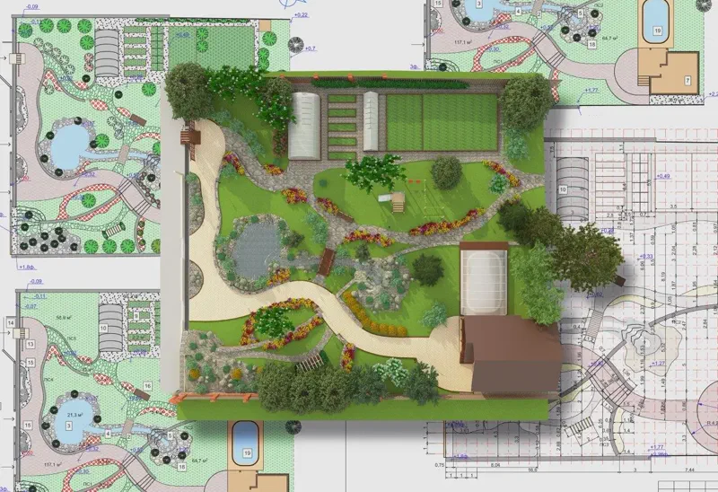
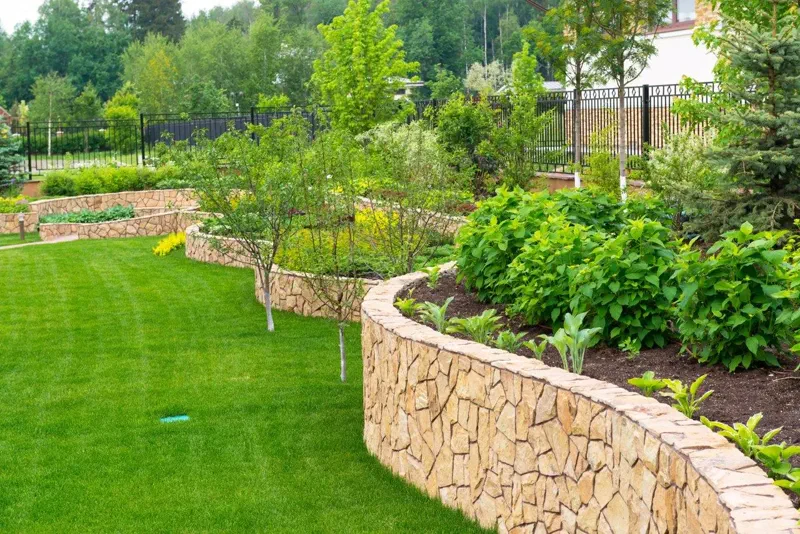
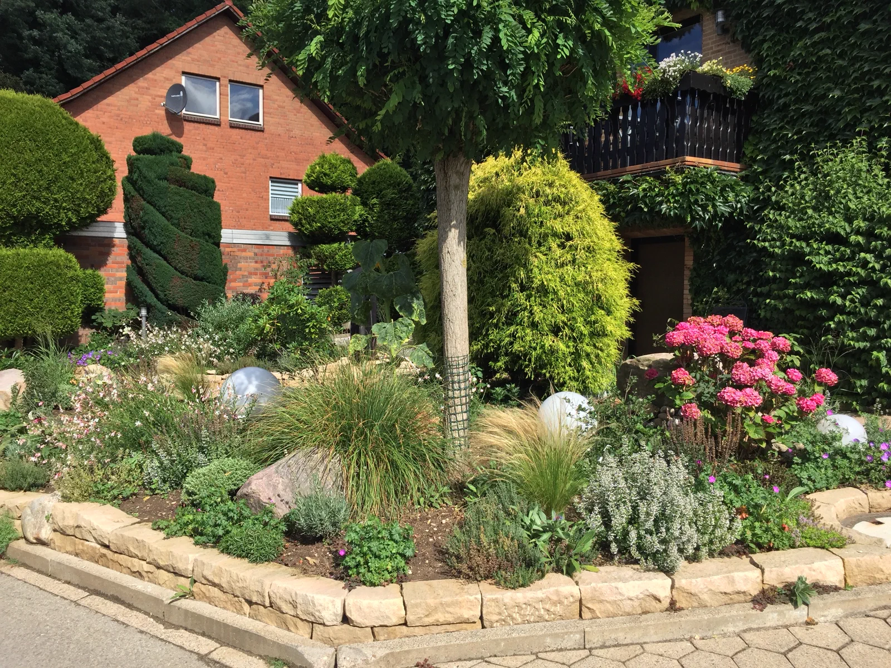
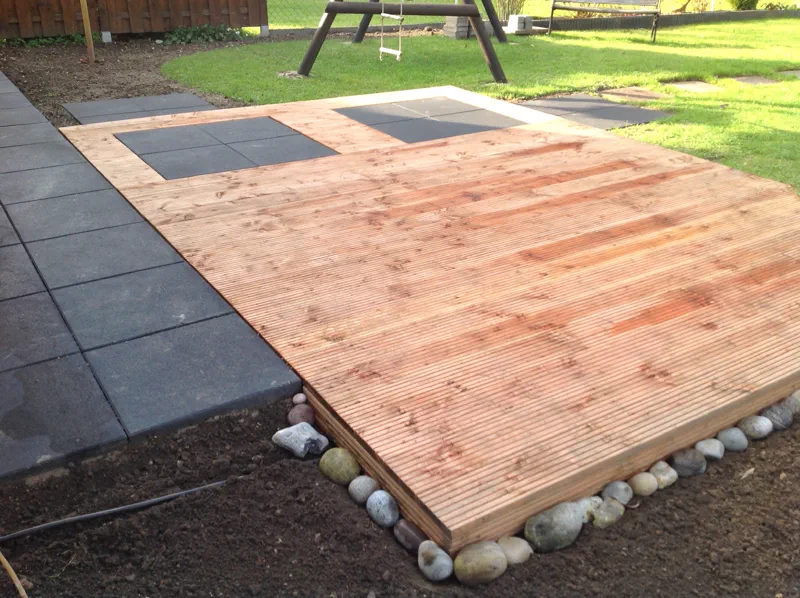

Gärten, die mit dem Leben wachsen.
Seit 1998 planen, bauen und pflegen wir Außenräume im Weserbergland – naturnah, handwerklich präzise und ganz nach Ihren Wünschen.
Ein Garten ist kein Produkt. Er ist ein Ort, der mit den Jahren schöner wird.
Was als kleiner Familienbetrieb begann, ist heute ein eingespieltes Team mit einem klaren Anspruch: Außenanlagen zu schaffen, die funktionieren – und begeistern.
Über unsSchicht für Schicht

Weg
Pflanze
WasserVier Disziplinen,
ein Handwerk



-
01
Gartengestaltung
Neuanlage und Umgestaltung — vom ersten Spatenstich bis zum letzten Pflasterstein. Wir arbeiten mit ehrlichen, langlebigen Materialien und bauen Außenanlagen, die funktionieren und Bestand haben.
Zur Gartengestaltung -
02
Gartenplanung
Aus Ihren Ideen entsteht ein maßgeschneidertes Konzept mit detaillierten Zeichnungen — ästhetisch und funktional. Wir nehmen uns Zeit für die Gegebenheiten vor Ort, bevor die erste Linie fällt.
Zur Gartenplanung -
03
Gartenpflege
Auch nach der Fertigstellung sind wir da. Mit individuellen Pflegekonzepten bleibt Ihr Garten dauerhaft in Bestform — Form- und Rückschnitt, Rasen, Beete, das ganze Jahr über.
Zur Gartenpflege -
04
Bepflanzung
Die Ebene, die den Garten lebendig macht. Wir wählen Stauden, Gräser und Bäume nach Standort und Farbkonzept — damit sich das Bild über die Jahre entwickelt, statt nur im ersten Sommer zu funktionieren.
Zur Bepflanzung

Erst die Linie. Dann der Stein. Dann das Leben.
Stein. Holz. Wasser. Pflanze.
Wir arbeiten mit ehrlichen, langlebigen Materialien – vom ersten Spatenstich bis zum letzten Pflasterstein.

HolzGebaut im Weserbergland
In fünf Schritten zum Garten
Beratung & Vor-Ort-Termin
Wir nehmen uns Zeit für Ihre Wünsche – direkt bei Ihnen im Garten. Wir hören zu, prüfen die Gegebenheiten und finden die Richtung.
Planung & Skizze
Aus Ihren Ideen entsteht ein maßgeschneidertes Konzept mit detaillierten Zeichnungen – ästhetisch und funktional.
Material- & Pflanzenauswahl
Naturstein, Holz, Pflaster, Stauden oder Bäume – wir wählen mit Ihnen die passenden Materialien und Pflanzen.
Fachgerechte Umsetzung
Vom ersten Spatenstich bis zum letzten Pflasterstein – termintreu, sauber und mit langlebigen Materialien.
Pflege & Weiterentwicklung
Auch danach sind wir da: mit individuellen Pflegeplänen bleibt Ihr Garten dauerhaft in Bestform.
Gegründet als Familienbetrieb in Salzhemmendorf – seither in Familienhand.
Jahre Erfahrung im Garten- und Landschaftsbau, von der Planung bis zur Pflege.
Regionen im Einsatzgebiet: Salzhemmendorf, Hameln, Hildesheim und Umgebung.
„Es war die beste Entscheidung, uns für de Vries zu entscheiden – zuverlässig, professionell, jederzeit wieder."
Das Team war von Anfang an freundlich und offen für alle Fragen. Wir sind mit dem Ergebnis absolut zufrieden.
Auf 30 m Länge wurden Winkelstützen gesetzt – jederzeit erreichbar, professionell, immer eine aufgeräumte Baustelle.
Vorder- und Hintergarten komplett neu: Rollrasen, Beete, Steinplatten. Termine wurden zuverlässig eingehalten.
Wo wir für Sie im Garten sind
Von Salzhemmendorf aus gestalten und pflegen wir Gärten in der ganzen Region – wohnortnah und zuverlässig.
Erzählen Sie uns von Ihrem Garten.
In wenigen Schritten schildern Sie Ihr Vorhaben – wir melden uns mit einem passenden Vorschlag.